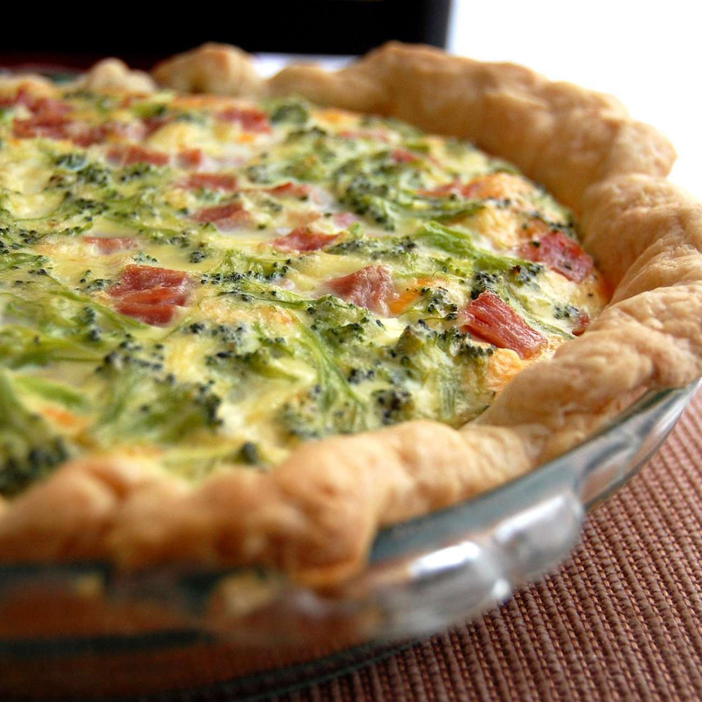

Home
Quinstenitial Quiche

Description
This is a simple, budget friendly recipe fit for college students or those
who just want a quick and cheap meal.
Ingredienst
- Swiss Cheese
- Flour
- Unbaked Pie Crust
- Diced Cooked Ham
- Large Eggs
- Milk
- Salt
- Dried Mustard
- Chopped Fresh Parsley
- Chopped Pimento Peppers
Steps
- Gather all ingredients. Preheat the oven to 400 degrees F
- Toss shredded cheese and flour together in a medium bowl. Sprinkle mixture onto frozen pie crust. Add diced ham on top of cheese
- Combine eggs, milk, salt, and dry mustard in a medium bowl. Beat until smooth and pour over cheese and ham.
- Place foil around the edges of the crust to protect it from burning
- Bake in the preheated oven until the filling is set and the crust is golden brown, about 1 hour. A knife inserted into the center of the quiche should come out clean.
- Garnish with parsley and pimento peppers before serving.